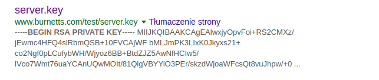

Main problem with revert
People don't do atomic changes so reverting stuff is painful.
Michał Zając
Akademickie Stowarzyszenie Informatyczne
Git actually has two modes, Smart and Dumb HTTPS
ssh-keygen -t rsa -b 4096 -C "spock@star.trek"
$HOME/.ssh/id_rsa and $HOME/.ssh/id_rsa.pub
Don't do dumb shit like this:
You can do whatever you want, git checkout --, git reset --soft/--hard or even git rebase -i.
If you use something else than git revert then your fellow programmers will find you and kill you.
revert
People don't do atomic changes so reverting stuff is painful.
git cherry-pick 09c063In Git 101 I covered merging. This time around I will talk about rebasing and when you don't want to use it.


We are basically going to take the patch of the change from C4 and reapply it on top of C3.
$ git checkout experiment
$ git rebase master
$ git checkout master
$ git merge experiment
(...) rebasing makes for a cleaner history. If you examine the log of a rebased branch, it looks like a linear history: it appears that all the work happened in series, even when it originally happened in parallel.

Let's say we want to apply changes from client branch to master branch but not all the changes from server branch.
git rebase --onto master server client
This basically says, “Take the client branch, figure out the patches since it diverged from the server branch, and replay these patches in the client branch as if it was based directly off the master branch instead.”


git rebase master server

Do not rebase commits that exist outside your repository.
We clone a repository and do some work on it.

Someone else did some work including a merge and pushed it to the remote server. You pulled the changes and merged them.

Now this smartass decided to rebase his work and force pushed it to the server.

If you git pull this you will get something like that
Not sure why you would want this but why not.
Dead simple, might not work in some extreme cases. If you are not sure then go with this.
Presented by Vincent Driessen in 2010, makes my head hurt.

Sure mate, give me two hours or so.
Apparently GitFlow is harmful so Adam Ruka proposed something simpler.
I didn't use that so I won't comment on it.
Tell me your secrets .git directory!
ls -F1 .git
branches/
config
description
HEAD
hooks/
info/
objects/
refs/config - file contains your project-specific configuration optionsHEAD - points to the branch we are onindex - stores your staging area informationhooks - directory contains your client- or server-side hook scriptsinfo - keeps a global exclude file for ignored patterns that you don’t want to track in a .gitignore fileobjects - stores all the contentrefs - stores pointers into commit objectsObject is basically anything you put into Git. Once something is stored Git gives you a unique key that you can use to retrive it. We can use git hash-object to create new data object and manually store it
$ git init test
Initialized empty Git repository in /tmp/test/.git/
$ cd test
$ find .git/objects
.git/objects
.git/objects/info
.git/objects/pack
$ find .git/objects -type f$ echo 'test content' | git hash-object -w --stdin
d670460b4b4aece5915caf5c68d12f560a9fe3e4
$ find .git/objects -type f
.git/objects/d6/70460b4b4aece5915caf5c68d12f560a9fe3e4It's going to be garbage. Use git cat-file instead.
$ git cat-file -p d670460b4b4aece5915caf5c68d12f560a9fe3e4
test content$ echo 'version 1' > test.txt
$ git hash-object -w test.txt
83baae61804e65cc73a7201a7252750c76066a30
$ echo 'version 2' > test.txt
$ git hash-object -w test.txt
1f7a7a472abf3dd9643fd615f6da379c4acb3e3a
find .git/objects -type f
.git/objects/1f/7a7a472abf3dd9643fd615f6da379c4acb3e3a
.git/objects/83/baae61804e65cc73a7201a7252750c76066a30
.git/objects/d6/70460b4b4aece5915caf5c68d12f560a9fe3e4